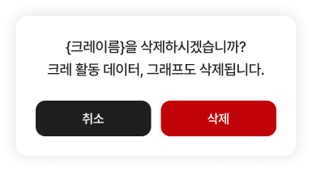

23 · 개체 삭제 확인창
22번 승인 완료 · 다음 검수
기본 Material 확인창이 남아 있어 수정이 필요합니다.
① 실제 개체 이름 + 중앙 정렬 두 줄 문구
② 흰 바탕345pt·반경12·본문18pt
③ 균등한 검정/빨강 ‘취소·삭제’ 버튼
제품 코드는 아직 수정 전입니다.
Figma 원본 · 345×172
23 · 현재 앱 · 280×188 원본처럼 실제 이름을 넣어 ‘크랑이를 삭제하시겠습니까?’로 표시하고, 앞서 검증한 공통 확인창을 적용하는 안입니다.
개체 메뉴에서 확인창을 열고 취소했으며 삭제 콜백은 호출되지 않았습니다. 실제 삭제 범위나 서버 동작은 변경하지 않습니다.
전체 제품 위젯 캡처
상세 측정·수정 제안